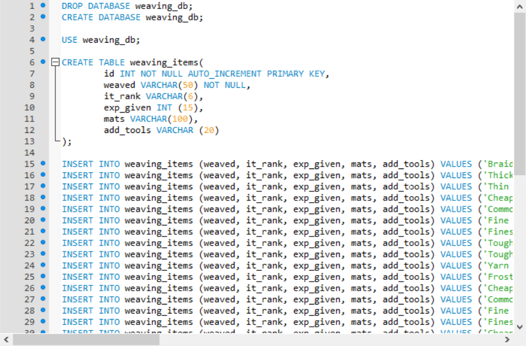
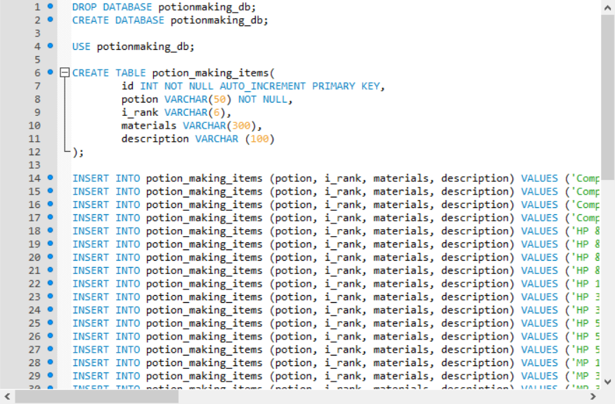
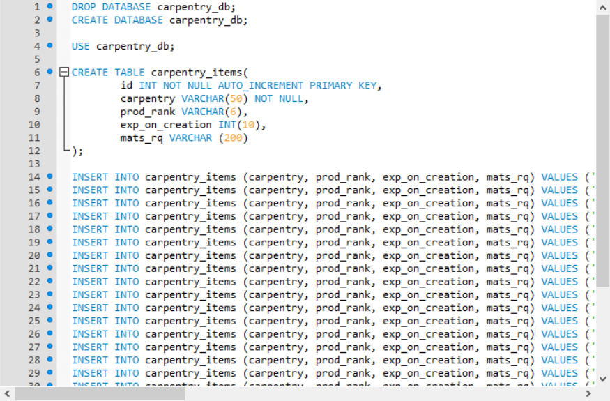
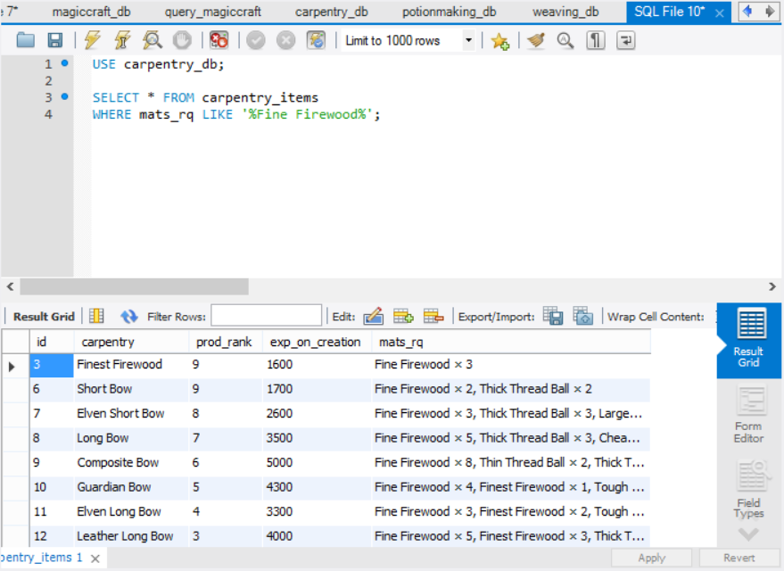

Slowly I am building a database for all the crafting components of the Mabinogi World Wiki. Currently, it has:
- Magic Craft
- Handicraft
- Weaving
- Carpentry
- Potion-Making

Quick potential queries for the Magic Craft database portion.

Installing the Magic Craft database.

Creating tables for the Handicraft database.

Inserting data for the implemented handicraft items.

Inserting data for previously implemented handicraft items.

Inserting data for handicraft items that aren't implemented yet.

Inserting data for handicraft items that are only obtained through Part Time Jobs.

Creating table for the Weaving database.

Creating table for the Potion-Making database.

Creating table for the Carpentry database.

A quick query into the Carpentry database.